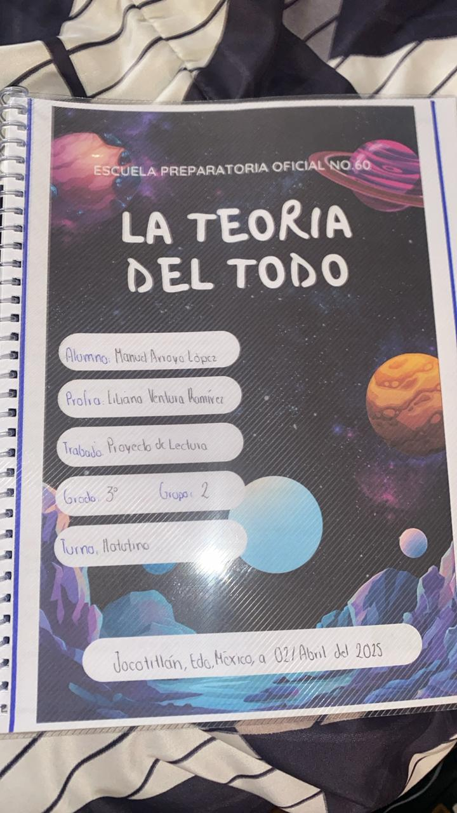

Stephen Hawking fue un reconocido fisico teorico, cosmologo y autor britanico. Nacio el 8 de enero de 1942 en Oxford, Inglaterra y es consideraod uno de los cientificos mas importantes del siglo XX. A los 21 años fue diagnosticado ccon esclerosis lateral amiotrofica (ELA), una enfermedad degenerativa que no le impidio continuar con su brillante carrera. Su libro "La teoria del todo" es una recopilacion de conferencias en las que se explca de manera clara y accesible a los grandes temas del universo. El big bang, agujeros negros, el tiempo, el espacio y la busqueda de una teoria unificada que explique todo. Refleja la capacidad unia del autor para poder hacer comprensible conceptos complejos.

En este capítulo, Hawking describe las teorías del Big Bang y la expansión del universo. Comienza con una explicación clara de cómo surgieron estas ideas y cómo han evolucionado con el tiempo.
Hawking parte de la teoría del Big Bang como el modelo cosmológico más aceptado para explicar el origen del universo. Según este modelo, el universo surgió hace aproximadamente 13.8 mil millones de años a partir de un estado extremadamente denso y caliente. Esta "explosión" no fue como una explosión en el espacio, sino una expansión del propio espacio.
Hawking destaca varios elementos clave:
Singularidad inicial: Al retroceder en el tiempo, las ecuaciones de la relatividad general indican que toda la materia y energía del universo estaba concentrada en un punto infinitamente pequeño. A esto se le llama una singularidad, donde las leyes de la física tal como las conocemos dejan de tener sentido.
Tiempo y espacio como entidades finitas: Hawking introduce una idea revolucionaria en el libro: que el tiempo puede haber tenido un comienzo en esa singularidad, y que, antes del Big Bang, el tiempo simplemente no existía. Es decir, preguntar “¿qué había antes del Big Bang?” no tiene sentido en este marco teórico, porque el “antes” no existía.
Modelo sin bordes: Hawking y James Hartle propusieron un modelo cuántico del universo en el que no hay borde ni comienzo en el tiempo, similar a la superficie de una esfera, que no tiene borde ni punto inicial, aunque sí es finita.

Reflexión: Durante este capitulo tuve la gran fortuna de póder conocer mas a fondo el como fue que inicio nuestro universo, desde donde comenzamos y para donde vamos, al final de cuentas creo que es eso, el descubrir, la intriga por saber mas y mas, es una caracteristica de los seres humanos.
Creo que el inicio del universo es una maravilla, pues todos somos parte de lo mismo, asi como dice "nosotros somos polvo de estrellas".
En La teoría del todo, Stephen Hawking explica que los agujeros negros no son completamente oscuros como se pensaba antes, sino que emiten una leve radiación, ahora conocida como radiación de Hawking. Esta idea revolucionaria une la relatividad general con la mecánica cuántica y sugiere que los agujeros negros pueden evaporarse con el tiempo. Hawking plantea que, lejos de ser trampas eternas, los agujeros negros podrían tener un papel clave en entender cómo funciona el universo a nivel fundamental.
También introduce un gran detalle sobre estos con las famosas singularidades, las cuales son lugares extremos, donde cada ley, cada regla de la fisica o relatividad dejan de funcionar, pues el lugra es tan inmenso y con una gravedad enorme que al final nada puede escapar de ahi, ni si quiera la luz.
Stephen Hawking describía los agujeros negros como regiones del espacio donde la gravedad es tan intensa que nada —ni siquiera la luz— puede escapar. Se forman cuando una estrella muy masiva colapsa al final de su vida.
Sin embargo, lo que hizo a Hawking famoso en este campo no fue solo aceptar su existencia, sino revolucionar nuestra comprensión sobre ellos.
1. Radiación de Hawking (1974)
Uno de los descubrimientos más importantes de Hawking fue que los agujeros negros no son totalmente "negros". Usando la mecánica cuántica, predijo que los agujeros negros emiten una leve forma de energía, llamada radiación de Hawking, lo que significa que:
Pueden perder masa con el tiempo.
Eventualmente, pueden evaporarse y desaparecer.
Esto fue impactante porque combinaba principios de física cuántica, gravedad, y termodinámica, áreas que antes estaban separadas.
2. Paradoja de la información
Hawking también planteó una pregunta que aún genera debate:
Si un agujero negro se evapora completamente, ¿qué pasa con la información de todo lo que cayó en él?
Según las leyes cuánticas, la información no se puede destruir. Pero si el agujero negro desaparece, parecería que la información se ha perdido para siempre. Esta es la famosa paradoja de la información, que aún no ha sido resuelta completamente.
3. El horizonte de eventos
Hawking explicaba que el horizonte de eventos es la "frontera" del agujero negro. Una vez que algo la cruza, ya no puede salir. Sin embargo, gracias a los efectos cuánticos, algunas partículas pueden escapar justo en esa frontera, lo que da lugar a la radiación de Hawking.
4. Agujeros negros y el universo temprano
También sugirió que miniagujeros negros podrían haberse formado en los primeros instantes del universo, y que el estudio de estos podría ayudarnos a entender mejor el origen del cosmos.
SABIAS QUE ALGO QUE SUPERA LA VELOCIDAD DE LA LUZ SE LE LLAMA "TAQUION"?

Reflexión: Este capítulo me enseñó a valorar cómo la ciencia está en constante cambio y cómo la imaginación es clave en la investigación científica, como dice EINSTEIN "cuando se trata de ciencia la imaginacion vale mas que la inteligencia", creo que los agujeros negros son impresionantes y en su manera Stephenm logra recabar todos sus conocimientos de manera sencilla en el texto para asi poder entenderlos. pero imagino entidades tan inmensas como los agujeros negros que son tan densos. Imagina un agujero negro, ese agujero negro podria pesar lo mismo que el mundo entero dentro de una tasa de café, eso es realmente impresionante. El saber que un agujero negro podria ser pequeño desde el tamaño de una mesa hasta gigante con el tamaño de millones de soles, eso es extraordinario.
En este capítulo se examina la naturaleza del tiempo, cómo lo percibimos y su relación con el espacio. Se menciona la teoría de la relatividad de Einstein como una base para estos conceptos.
También se reflexiona sobre los límites del tiempo y la posibilidad de viajar a través de él, tanto hacia el futuro como hacia el pasado.
En La teoría del todo, Stephen Hawking describe el espacio-tiempo como un tejido cuatridimensional que combina las tres dimensiones espaciales con el tiempo, según la teoría de la relatividad de Einstein. Este espacio-tiempo puede curvarse bajo la influencia de la masa y la energía, lo que da lugar a fenómenos como la gravedad. Por otro lado, la teoría cuántica introduce una descripción probabilística de la naturaleza, donde las partículas no tienen posiciones definidas hasta que son observadas. Hawking sugiere que una verdadera "teoría del todo" debe unificar la relatividad general con la mecánica cuántica. Los años luz, mencionados al explicar las vastas distancias del universo, representan la distancia que la luz recorre en un año, aproximadamente 9.46 billones de kilómetros. Estas unidades ayudan a comprender escalas cósmicas, como la separación entre galaxias o la antigüedad de la luz que observamos.
Reflexión: Me ayudó a comprender lo relativo que puede ser el tiempo y cómo la ciencia puede cambiar nuestras ideas cotidianas.
Hawking discute los desafíos actuales de la física teórica, especialmente la búsqueda de una teoría del todo que unifique la relatividad general con la mecánica cuántica.
Se menciona la importancia del trabajo colaborativo en la ciencia y cómo el futuro depende del progreso de estas investigaciones.
En el capítulo final de La teoría del todo, Stephen Hawking analiza el futuro del conocimiento humano y el sentido del universo. Explica que existen tres flechas del tiempo: la flecha termodinámica (donde la entropía aumenta), la flecha psicológica (nuestra percepción del tiempo que avanza) y la flecha cosmológica (la dirección del tiempo desde el Big Bang).
Hawking plantea que, si logramos una teoría unificada que combine la relatividad y la mecánica cuántica, entenderemos las leyes que rigen el universo. Este conocimiento, dice, podría permitirnos "conocer la mente de Dios", una frase que utiliza simbólicamente para expresar la comprensión total del cosmos.
El futuro dependerá de cómo usemos ese conocimiento. Podríamos destruirnos o alcanzar una etapa donde la humanidad se expanda más allá de la Tierra. La ciencia no solo nos da respuestas, también plantea nuevas preguntas que guían nuestro destino.
Reflexión: Me motivó a seguir aprendiendo y valorando el conocimiento científico como una herramienta para entender el mundo.
| Parcial | Actividad | Descripcion | Evidencia |
|---|---|---|---|
| 1° Parcial | Lectura y analisis de los primeros 3 capitulos, se realizo un cuestionario en forms para asi calificar lo aprendido. | Entregamos 3 pregutas con respuestas a el maestro que nos tocaba que revisara y contestamos un formulario. | |
| 2° Parcial | Lectura y analisis de los capitulo 4 y 5 de el libro, e hicimos un glosario engargolado de conceptos clave. | Teniamos que leer en la clase que se nos asignaba una parte de nuestro libro para asi poder entregar evidencia con nuestra orientadora, para que nos sellara, ademas añadimos postics a las hojas que leiamos con notas pequeñas. |  |
| 3° Parcial | Se hizo una nube de ideas en una pagina web con conceptos de el libro | Nos proporcionaron una pagina web para hacer una nube de ideas en equipo de nuestra pagina web. |  |